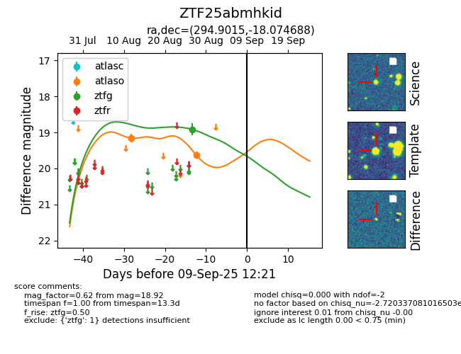

Target ZTF25abmhkid at 2025-08-27 05:32, see:
FINK: fink-portal.org/ZTF25abmhkid
Lasair: lasair-ztf.lsst.ac.uk/objects/ZTF25abmhkid
ALeRCE: alerce.online/object/ZTF25abmhkid
alt names
ZTF25abmhkid (ztf,fink)
coordinates:
equatorial (ra, dec) = (294.9015,-18.07469)
galactic (l, b) = (21.6373,-18.54117)
photometry
last atlaso=19.16, ztfg=18.92
1 atlaso, 1 ztfg detections
